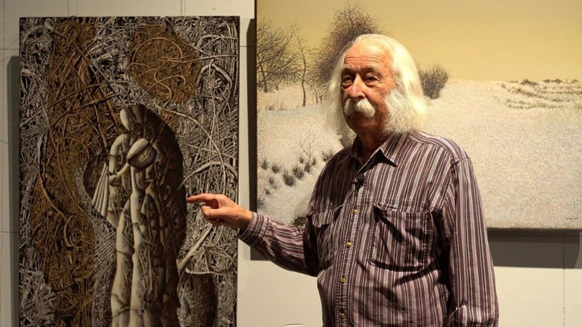
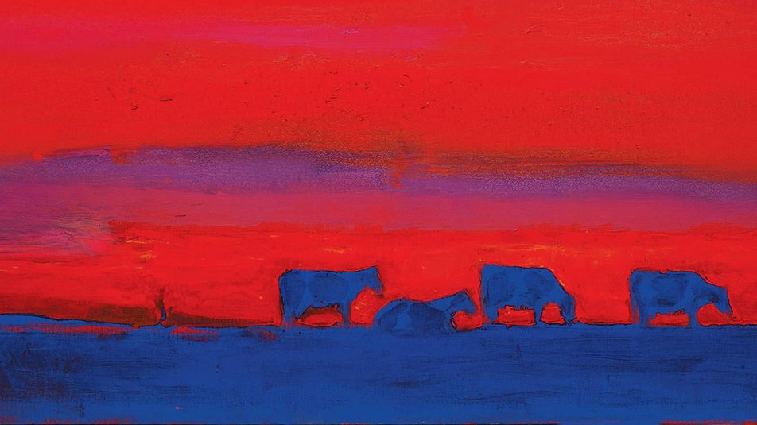
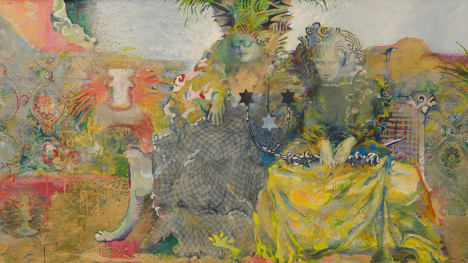
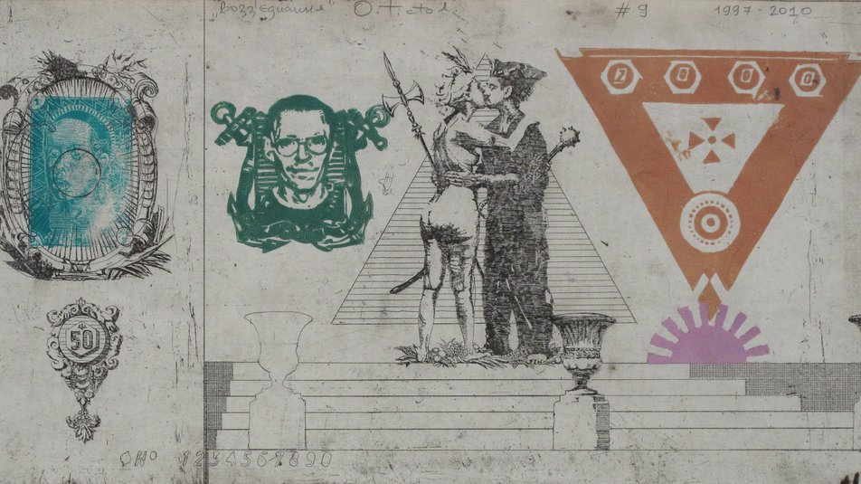
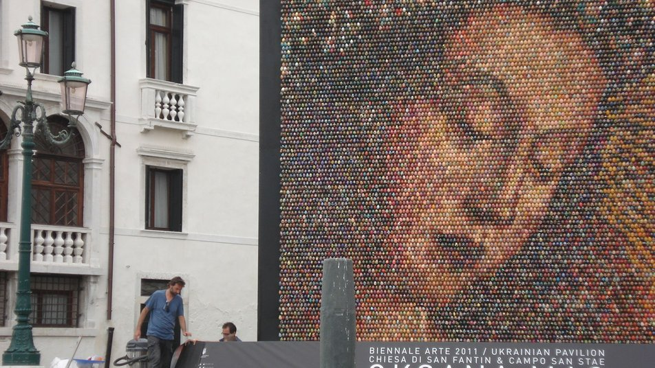
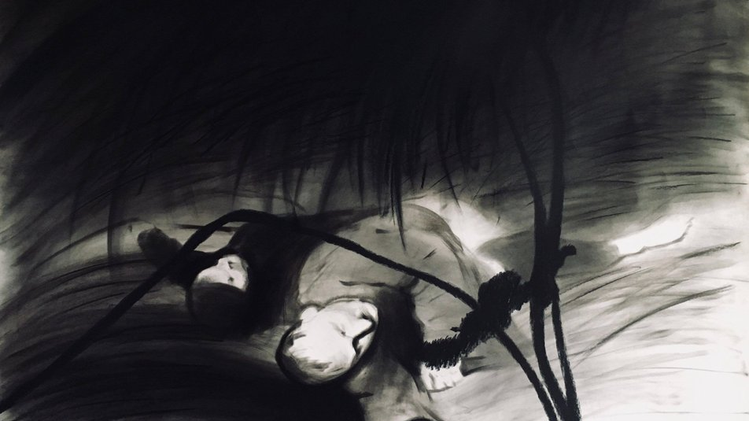
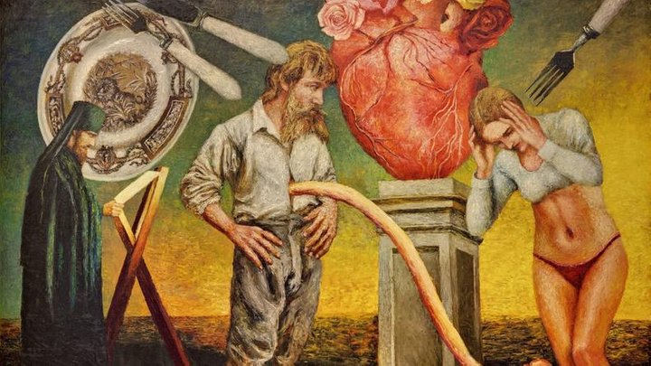
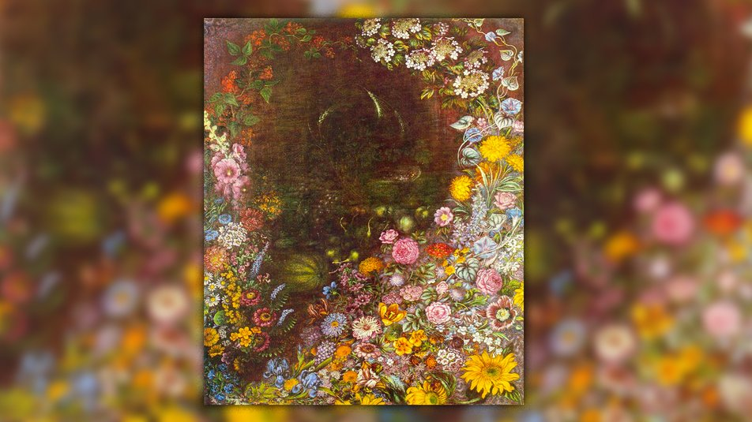
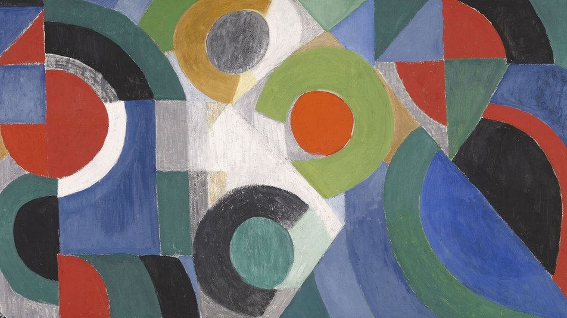
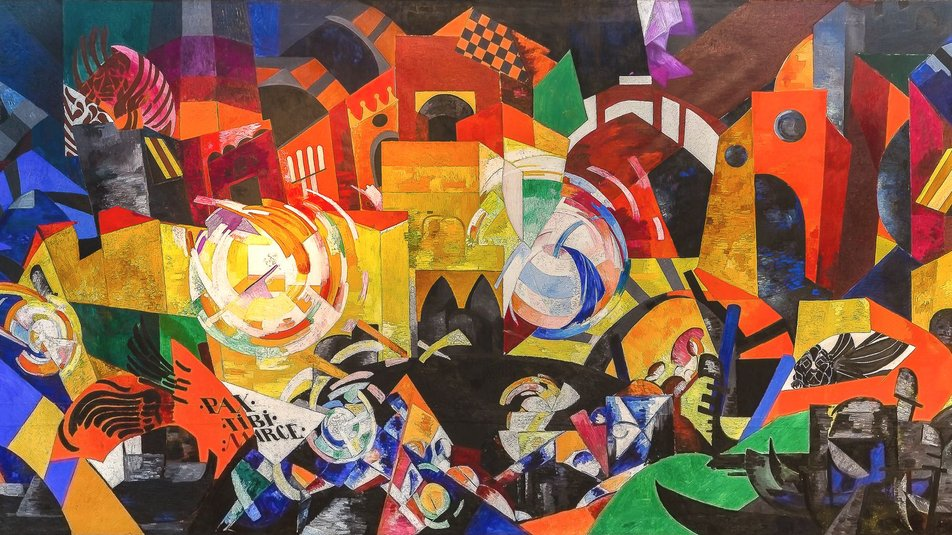

10 геніальних українських художників, яких знає увесь світ
Культурна спадщина України зростає з кожним роком – відомі українські художники продають свої
роботи
на
всесвітніх аукціонах, таких як Phillips та Sotheby's, беруть участь у Венеційській бієнале, їхні картини
виставляються у провідних галереях Європи та світу. Культурний внесок у розвиток українського мистецтва
деяких
з них зуміли оцінити лише роки опісля, інші здобули визнання за життя. Суспільне склало добірку 10
популярних
митців з їхніми роботами, щоб розширити кругозір читача та вкотре показати багатогранність авторів та творів
українського мистецтва.
Іван Марчук
"Дайте мені тисячу років – я розмалюю небо і не повторюся!", – Іван Марчук
Іван Марчук – відомий художник, патріарх авангарду, легенда українського живопису, геній, який створив близько
5 000 робіт, відкрив понад 150 монографічних та 50 колективних виставок і придумав свій власний стиль
"пльонтанізм" (походить від українського слова "пльонтати" – плести).
Його роботи знаходяться у музеях на п'яти континентах. Марчук потрапив до списку "100 найкращих живих геніїв",
складеного британською газетою Daily Telegraph. Міжнародна академія сучасного мистецтва в Римі прийняла його до
Золотої гільдії (до якої входить 51 художник зі всього світу) та обрала почесним членом наукової ради академії.
Однак міжнародному визнанню передували тривалі напади депресії та заборонені виставки у колишньому СРСР.

Анатолій Криволап
Анатолій Криволап – український живописець, майстер нефігуративного живопису та пейзажу. Один із
найвідоміших і
найдорожчих (за версією журналу Forbes) художників українського сучасного мистецтва.
Його роботи можна побачити у найкращих музейних та приватних колекціях світу. У 2013 році картину Криволапа
"Кінь. Вечір" було продано в Лондоні за $186 тис. У 2016 році Анатолій Криволап заснував іменну премію для
молодих художників у розмірі $5 тис. (стипендіати отримують не гроші, а квиток на літак, оплату готелю та
вхідних квитків у найкращі музеї світу).
Доволі тривалий час Криволап проводив експерименти з кольором, аби потім знищити усі ці експериментальні
полотна. Проте з час він почав новий етап художньої кар’єри, підкоривши нову уявну вершину і знайшовши свій
характерний стиль – експресивні пейзажі, написані яскравими фарбами на великих полотнах. Як зізнається сам
художник, перш за все його надихають фарба і стосунки з природою.

Ілля Чичкан
Ілля Чичкан – епатажний український художник, чиї роботи виставлялися у Музеї сучасного мистецтва у
Нью-Йорку,
а також у галереях та музеях Європи, Південної та Північної Америки. Найдорожчу картину Чичкана "ІТ"
("Воно")
продали на аукціоні Philips de Pury за $70 тис.
У 1990-х роках його ім'я було пов'язане з рухом митців під назвою "Нова Хвиля" – локальним українським
проявом
мистецтва трансавангарду (це один із напрямків у мистецтві раннього постмодернізму), який з'явився як
реакція
на ключові соціально-політично-культурні зміни, що настали з початком реформ "перебудови" 1985-1991 років.
Працює в різних жанрах: живопис, фотографія, інсталяція, відео.
Роботи художника виставлялися у провідних галереях та музеях Європи, США та Південної Америки, а також брали
участь у престижних міжнародних форумах та фестивалях сучасного мистецтва – бієнале у Сан-Паулу (1996),
бієнале
сучасного мистецтва в Йоганнесбурзі (1997), Празькій бієнале (2003), Белградській бієнале (2004),
європейській
бієнале Manifesta (2004), а також Венеційській бієнале (2009).

Олег Тістол
Олег Тістол – один із найуспішніших українських митців на світовому артринку, чиї роботи неодноразово
представлялися на провідних світових бієнале сучасного мистецтва та таких знаменитих аукціонах як Bonhams,
Christie's, Phillips, Sotheby's.
Представляв країну на бієнале мистецтв у Сан-Паулу у 1994 році та 49-й Венеційській бієнале у 2001 році.
Відмінною особливістю робіт Олега Тістола є художнє переосмислення різних кліше та стереотипів шляхом
експериментів. Один із них був зроблений у співпраці з дизайнеркою Анастасією Івановою у 2013 році, коли
відвідувачі 31-го Українського тижня моди брали участь у розмальовуванні роботи "Книжка-розмальовка",
створюючи
таким чином інтерактивний витвір мистецтва.

Оксана Мась
Оксана Мась – художниця, філософиня, гуманістка, урбаністка, теоретикиня та популяризаторка сучасного
мистецтва. Народилася 1969 року в Україні. Наразі проживає та працює в Іспанії у місті Фігейрасі.
Брала участь у 54-ій Венеційській бієнале (з сольним проєктом, представляла Україну), у 55-ій Венеційській
бієнале, у 65-му Фестивалі кіномистецтва в Локарно, на бієнале "Жінки та мистецтво" у Шарджі, ОАЕ, та у
численних Art Basel Miami (Маямі, США), Frieze (Лондон, Великобританія), FIAC (Париж), ARCOmadrid (Мадрид,
Іспанія), The Armory Show (Нью-Йорк, США), Art Dubai (Дубай, ОАЕ).
Роботи Оксани продаються на аукціонах Sotheby's, Christie's та Phillips і перебувають в музейних та
приватних
колекціях, таких як Stella Art Foundation, Фонд BREUS, колекція Joerg Bongartz, Сімейний художній музей
Sorelouzos, Capital Group Art Фонд, Фонд , колекції Віктора Пінчука та Віктора Бондаренка.
Оксана Мась пережила багато критики в Україні, але її досягнення напевно заслуговують на згадку. У 2011 році
весь світ був натхненний та вражений мозаїчним панно "Погляд у вічність", зробленим із 15 тисяч
розфарбованих
вручну великодніх яєць та встановленим у Софійському соборі – одній з найпопулярніших пам'яток Києва.

Нікіта Кадан
Нікіта Кадан – автор скульптур та інсталяцій, живописних та графічних робіт. Член групи художників Р.Е.П. та
кураторського й активістського об'єднання “Худрада”. Живе та працює у Києві.
Участь у великій груповій виставці, New Ukrainian Painting, художник вперше взяв у 2007 році (White Box
Gallery, Нью-Йорк, США), відтоді участь у групових виставках він брав щороку. Зокрема – представляв Україну
на
Венеційській бієнале у 2015 році.
Першу значну персональну виставку “Місце дії” було підготовлено спільно з колективом “Група предметів”. Вона
відбулася у 2009 році у київській галереї “Колекція”.
У своїх роботах Кадан поєднує інтелектуальну рефлексію та соціальну активність, своїми роботами реагуючи на
соціально-політичні дискусії у країні. Він тонко відчуває історичний контекст навколишнього світу,
зображуючи у
своїх роботах ті трансформації, які переживає як країна, так і окремо взята її столиця – Київ.
Найчастіше він працює у живописі та скульптурі, використовуючи абстракцію та моделювання як художні
стратегії,
які відсилають до російських авангардних рухів початку XX століття.

Олександр Ройтбурд
Олександр Ройтбурд — представник української нової хвилі та один із найдорожчих сучасних митців України,
який
здійснив революцію в Одеському художньому музеї. Один із найдорожчих сучасних українських художників
(стартова
ціна на картини в Україні – від $15 до $30 тисяч), його творчість охоплює живопис, графіку, відео,
інсталяцію
та перфоманс.
Його роботи зберігаються у Музеї сучасного мистецтва Нью-Йорку, Одеському художньому музеї,
PinchukArtCentre,
Художньому музеї Циммерлі при Рутгерському університеті (Нью-Джерсі), Державній Третьяковській галереї
Москви
та в приватних колекціях.
Мистецьке висловлювання митця наповнене еротизмом, поєднанням " високого" та "низького" , "класичного"
та "популярного". У його роботах можна зустріти маніпуляції з сюжетами класичного мистецтва, цитування
світових
шедеврів. Він не оминав увагою різні релігії та їхні цінності, суспільну мораль та самоіронію.

Катерина Білокур
Важко знайти випадок в історії мистецтва, коли бажання стати художником зустрічає стільки труднощів, скільки
довелося подолати Катерині
Білокур. Мрія дівчини із простої селянської родини здійснилася не
завдяки, а
всупереч долі. Майже все життя їй довелося боротися за право малювати, і, попри це, її картини випромінюють
поклоніння та захоплення дарами природи.
Польові та садові квіти, обожнювані художницею, як дзеркало чистої, полум'яної та ніжної душі, відбивають
погляд на світ зачарованої маленької дівчинки. Цей прояв чистого таланту отримав назву "наївного мистецтва",
а
сама Білокур входить до переліку найвідоміших жінок давньої та сучасної України, про яку сам Пабло Пікассо
говорив: "Якби ми мали художницю такого рівня майстерності, то змусили б заговорити про неї цілий світ".
Творчість Катерини Білокур порівнюють із відомими художниками-примітивістами Анрі Руссо, Іваном і Йосипом
Генераличами, Марією Примаченко, Ніко Піросманішвілі. Світу Катерину Білокур відкрив український письменник,
мистецтвознавець та дослідник творчості художниці Микола Кагарлицький, зібравши та видавши листи художниці,
а
також спогади сучасників про неї.

Соня Делоне
Творчість французької художниці та дизайнерки українського походження Соні Делоне (Sonia Delaunay) –
величезний
натхненний світ кольору. Делоне була видатною представницею арт-деко, авангарду і разом із чоловіком Робером
Делоне створила новий напрямок у живописі – “симультанізм” (ще одна назва – “орфізм”). Зображення руху
кольору
у світлі – так визначала художниця свої роботи.
"Для мене не існує поділу між моїм живописом та так званою декораторською роботою. Я ніколи не вважала
"прикладні мистецтва" чимось, що гальмує розвиток художника; навпаки, це було продовженням мого мистецтва",
–
казала Делоне.
Вперше форма не панує, а підпорядковується кольору; вперше форма будується не за допомогою світлотіні, а за
допомогою глибини кольору. Вони наче живі організми, впливають один на одного, створюють ілюзію руху та
ритму
– унікальний підхід для живопису того часу. Це дозволило Делоне стати першою жінкою, чия персональна
виставка
відбулася у Луврі. Законодавиця мод, яка зробила своїми полотнами сукні парижанок та автомобілі парижан.

Олександра Екстер
Олександра Олександрівна Екстер (Григорович) – художниця, сценографка, педагогиня. Яскрава представниця
європейського кубізму та футуризму, українського авангарду, одна з засновниць стилю ”р-деко”.
Під впливом супрематистської революції Малевича, активною співучасницею якої Екстер стала однією з перших
серед
побратимів-"безпредметників" восени 1915 року, пізніше, у 1916-1918 роках, вона зуміла створити мову
абстрактних форм та логіку композиційних структур, вільних від будь-якого впливу естетики, пропонованої
супрематизмом.
Свою філософію творчості Олександра знайшла, коли переїхала з України до Франції, щоби навчатися в Паризькій
академії. Втім, програма навчання виявилася ідентичною з нашими закладами, проте один із київських приятелів
Екстер познайомив її з поетом Аполлінером, який, своєю чергою, відвів її у майстерню Пікассо.
Акторка Аліса Коонен згадує про українську художницю: “В її паризькій господі, так само, як у ній самій,
впадало в очі своєрідне сполучення європейської культури з українським побутом. На стінах серед малюнків
Пікассо і Брака можна було побачити українські вишивки, на підлозі — український килим, до столу подавали
глиняні горщечки, яскраві майолікові тарілки з варениками”.
